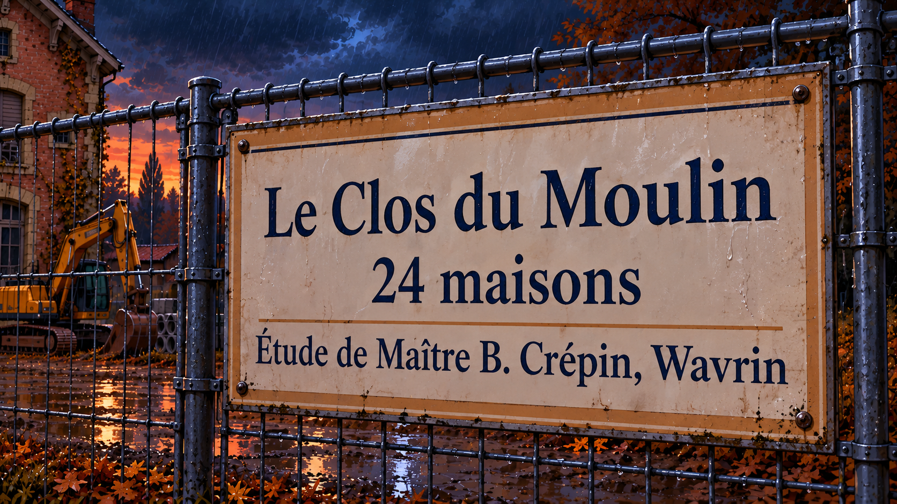
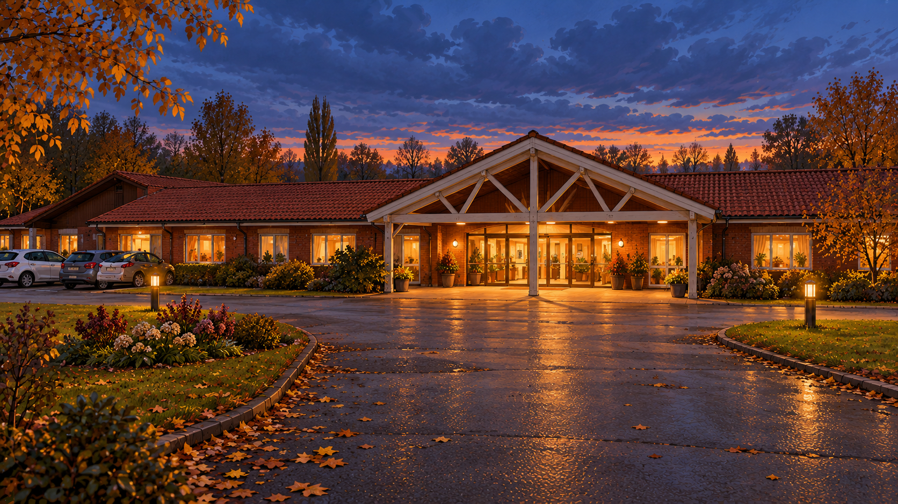
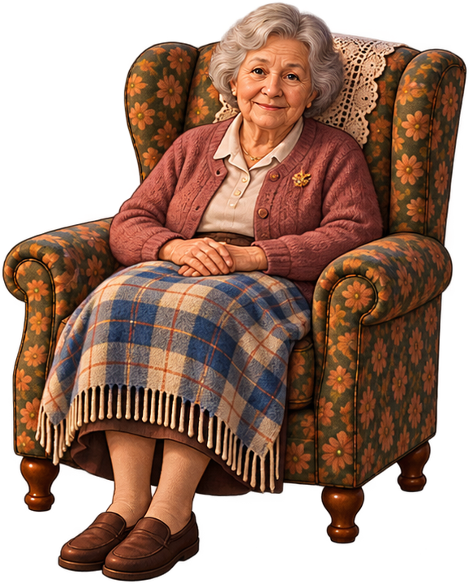
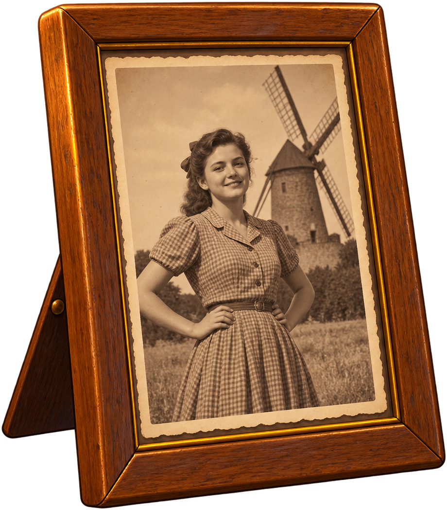

Fournes-en-Weppes, nuit du 1er au 2 novembre 2026
Sous un orage d'une violence rare, la vieille gare de Fournes s'effondre. Le lendemain, à la résidence des Weppes, l'horloge de la chambre de Gisèle s'est remise en marche toute seule, puis s'est arrêtée.
Dans les Weppes, les anciens disaient « au weppe » pour dire « au soir ». C'est l'heure où l'on rentre les bêtes, où l'on ferme les volets. L'heure où, parfois, ce qui est parti revient.

Un territoire bien réel

La gare de Fournes
Désaffectée depuis longtemps, à deux pas du chantier du Clos du Moulin. L'orage aura raison d'elle.

La résidence des Weppes
Un EHPAD calme, son jardin intérieur, son hall d'accueil et ses longs couloirs.

La chambre de Gisèle
Une pièce pleine de souvenirs. Chaque objet garde une trace de ce qui s'est passé.
Ceux qui restent, ceux qui reviennent

Gisèle
Résidente de la résidence des Weppes. Elle a toujours vécu ici, et se souvient de la gare quand les trains s'y arrêtaient encore.

Rose
Une jeune femme sur une vieille photo, devant un moulin. Un prénom au dos, d'une écriture fine. Personne ne sait plus qui elle était.
Un point & click, à la souris ou au doigt
Observer
Survolez le décor : les objets s'éclairent et révèlent leur nom.
Examiner
Cliquez pour lire, allumer, ouvrir. Certains objets changent d'état.
Comprendre
Reliez les indices pour reconstituer ce que la nuit de l'orage a réveillé.
Reprendre
Sauvegarde sur le navigateur, ou compte pour continuer sur un autre appareil.

Soyez parmi les premiers à monter à bord
Le prototype n'est pas encore ouvert au public. Inscrivez-vous pour y accéder en avant-première et suivre l'avancement du jeu.